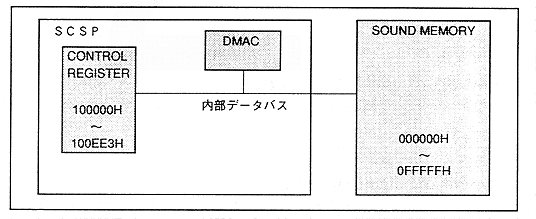

A block diagram of the DMA controller is shown in Figure 4.66. Initializes any area in the SCSP built-in control register or sound memory to "0". When this bit is "1B", "0" clear is executed ("DEXE" must be executed to actually start).
∙ Transfer data deletion ("0" write) by DGATE does not affect the data at the transfer source. There is no loss of data.
Figure 4.66 DMA controller block diagram
